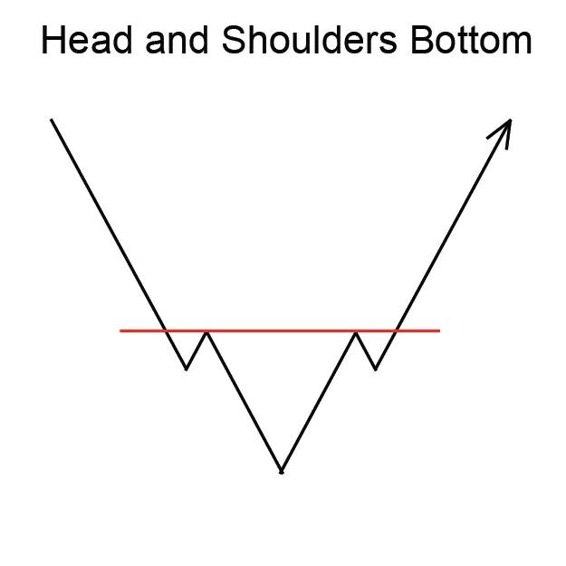
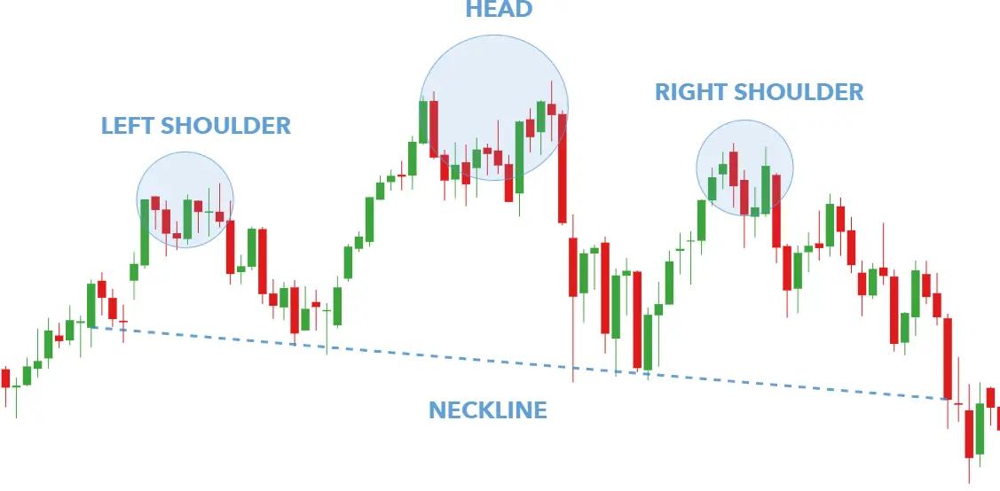

Implicaciones
Una cabeza y hombros abajo se considera una señal bullish. Indica una posible reversión de la tendencia descendente actual en una nueva tendencia ascendente.
Descripción
El fondo de la cabeza y los hombros es un patrón popular entre los inversores. Este patrón marca una reversión de una tendencia descendente en el precio de un instrumento financiero.
El volumen es absolutamente crucial para una cabeza y hombros Bajo. Un inversionista estará buscando volúmenes en aumento en el punto de breakout. Este aumento del volumen marca definitivamente el final del patrón y la reversión de una tendencia descendente en el precio de una acción.
Un ejemplo perfecto de la cabeza y los hombros Bottom tiene tres puntos bajos agudos creados por tres reacciones consecutivas en el precio del instrumento financiero. Es esencial que este patrón se forme a raíz de una importante tendencia descendente en el precio del instrumento financiero.
El primer punto -el hombro izquierdo- se produce cuando el precio del instrumento financiero en un mercado en caída alcanza un nuevo mínimo y luego sube en una pequeña recuperación. El segundo punto - la cabeza ocurre cuando los precios caen de la parte superior del hombro izquierdo a un nivel aún más bajo y luego subir de nuevo. El tercer punto -el hombro derecho- se produce cuando los precios vuelven a caer, pero no golpean la cabeza. Los precios suben de nuevo una vez que hayan alcanzado la parte baja del hombro derecho. Las alturas de los hombros son definitivamente más altas que la de la cabeza y, en una formación clásica, a menudo son aproximadamente iguales entre sí.
El cuello es un elemento clave de este patrón. El collar se forma dibujando una línea que conecta los dos puntos de alto precio de la formación. El primer punto alto ocurre al final del hombro izquierdo y el comienzo de la tendencia hacia abajo a la cabeza. La segunda marca el final de la cabeza y el comienzo del descenso al hombro derecho. El cuello suele apuntar hacia abajo en la cabeza y el fondo de los hombros, pero en raras ocasiones puede inclinarse hacia arriba.
El patrón es completo cuando la resistencia marcada por el collar está "quebrada". Esto ocurre cuando el precio de la acción, subiendo desde el punto bajo del hombro derecho se mueve hacia arriba a través del cuello. Muchos analistas técnicos consideran que el collar está "roto" solo si el stock se cierra por encima del collar.

Figura 8: Cabeza y hombros Bajo
La secuencia de volúmenes debería progresar comenzando con volumen relativamente pesado a medida que los precios bajan para formar el punto bajo del hombro izquierdo. Una vez más, el volumen aumenta a medida que el stock alcanza un nuevo mínimo para formar el punto de la cabeza. Es posible que el volumen en la cabeza pueda ser ligeramente menor que en el hombro izquierdo. Cuando el hombro derecho se está formando, sin embargo, el volumen debe ser notablemente más ligero como el precio de la acción una vez más se mueve más bajo.
Es más importante vigilar el volumen en el punto donde se rompe el collar. Para una verdadera reversión, los expertos están de acuerdo en que el volumen pesado es esencial.
Variaciones del fondo de la cabeza y los hombros
Hay algunas variaciones notables para este patrón.
Múltiples patrones de cabeza y hombros
Muchos patrones válidos de cabeza y hombros no están tan bien definidos como la cabeza clásica con un hombro en ambos lados. No es raro ver más de dos hombros y más de una cabeza. Una versión común de un patrón de cabezas y hombros múltiples incluye dos hombros izquierdos de más o menos el mismo tamaño, una cabeza, y luego dos hombro derecho que imitan el tamaño y la forma de los hombros de la izquierda.
Espaldas planas
El patrón clásico de Cabeza y Espaldas está compuesto por tres componentes agudos: la cabeza y dos hombros. Esto no siempre es así. A veces, los hombros pueden carecer de puntos bajos agudos y en su lugar ser bastante redondeados. Esto no afecta a la validez del patrón.
Características importantes
Las siguientes son características importantes para este patrón.
Simetría
En un clásico cabeza y hombros Bottom, los hombros izquierdo y derecho alcanzaron sus puntos relativamente bajos a aproximadamente el mismo precio y nivel. Además, los hombros suelen estar a la misma distancia de la cabeza. A los expertos les gusta ver la simetría, pero las variaciones no son letales para la validez del patrón.
Volumen
Es crítico observar la secuencia de volumen a medida que se desarrolla este patrón. El volumen suele ser más alto en el hombro izquierdo y más bajo en el derecho. Los inversores, tratando de asegurar que el volumen aumenta en la dirección de la tendencia, deben asegurarse de que ocurra una "explosión" en volumen en el momento en que se rompe el collar.
Duración del patrón
No es raro que el fondo de la cabeza y los hombros dure varios meses para desarrollarse. La actividad de volumen en las acciones es característicamente menor después de un período de disminución de los precios que después de los mercados de los toros. Debido a este menor volumen, los fondos tardan más tiempo en formarse y tienden a ser más pequeños que las cimas
Necesidad de una tendencia hacia abajo
Este es un patrón de reversión que marca la transición de una tendencia descendente a una ascendente.
La pendiente del cuello
En un patrón bien formado, la pendiente no será demasiado abrupta, pero no descuente automáticamente una formación con un collar abrupto. Algunos expertos creen que un cuello inclinado hacia arriba es más volátil que un descendente. Otros dicen que la pendiente tiene poco que ver con el grado de bullishness de la acción.
Consideraciones de negociación
Duración del patrón
Considere la duración del patrón y su relación con sus horizontes de tiempo de negociación. La duración del patrón se considera como un indicador de la duración de la influencia de este patrón. Cuanto más largo sea el patrón, más tiempo tardará en que el precio alcance el precio objetivo. Cuanto más corto sea el patrón, más rápido será el movimiento del precio. Si está considerando una oportunidad de comercio a corto plazo, busque un patrón con una duración corta. Si está considerando una oportunidad de comercio a largo plazo, busque un patrón con una duración más larga. La duración del patrón a veces se denomina "ancho" o "longitud" del padrón.
Precio objetivo
El precio objetivo proporciona una importante indicación sobre el movimiento potencial de los precios que este patrón indica. Considere si el precio objetivo para este patrón es suficiente para proporcionar rendimientos adecuados después de que sus costos (como comisiones) se hayan tenido en cuenta. Una buena regla es que el precio objetivo debe indicar un retorno potencial de más del 5% antes de que un patrón se considere útil. Sin embargo, debe tener en cuenta el precio actual y el volumen de acciones que tiene la intención de negociar. También, compruebe que el precio objetivo ya no se ha alcanzado.
Tendencia de entrada
La tendencia de entrada es una característica importante del patrón. Una tendencia de entrada superficial puede indicar un período de consolidación antes de que comience el movimiento de los precios indicado por el patrón. Busque una tendencia de entrada que sea más larga que la duración del patrón. Una buena regla es que la tendencia de entrada debe ser al menos dos veces la duración del patrón.
Criterios que respaldan
Apoyo y resistencia
Busque una región de apoyo o resistencia alrededor del precio objetivo. Una región de consolidación de precios o una fuerte línea de apoyo y resistencia en o alrededor del precio objetivo es un indicador fuerte de que el precio se moverá a ese punto.
Ubicación de la media móvil
La cabeza y la parte inferior de los hombros deben estar por debajo de la media móvil. Compara la ubicación del patrón con una media móvil de longitud adecuada. Para patrones de corta duración, utilice una media móvil de 50 días, para patrones más largos utilice un promedio móvil de 200 días.
Tendencia de media móvil
La media móvil debe cambiar de dirección dentro de la duración del patrón y debe dirigirse en la dirección indicada por el patrón. Para patrones de corta duración, utilice una media móvil de 50 días, para patrones más largos utilice un promedio móvil de 200 días.
Volumen
El volumen suele ser más alto en el hombro izquierdo y más bajo en el derecho.
Un fuerte pico de volumen el día de la confirmación del patrón es un indicador fuerte en apoyo del potencial para este patrón. El pico de volumen debe estar significativamente por encima de la media del volumen durante la duración del patrón.
Otros patrones
Otros patrones de reversión (como las líneas de engulfamiento de Bullish y Bearish y las islas) que ocurren en las cumbres y los valles indican una fuerte resistencia en esos puntos. La presencia de estos patrones dentro de una cabeza y hombros es una fuerte indicación en apoyo de este patrón.
Criterios que refuten
Sin aumento de volumen en la confirmación
La falta de un pico de volumen el día de la confirmación del patrón es una indicación de que este patrón puede no ser fiable. Además, si el volumen ha permanecido constante, o estaba aumentando, durante la duración del patrón, entonces este patrón debe considerarse menos fiable.
Ubicación de la media móvil
Si el fondo de la cabeza y los hombros está por encima de la media móvil, entonces este patrón debe considerarse menos fiable. Compara la ubicación del patrón con una media móvil de longitud adecuada. Para patrones de corta duración, utilice una media móvil de 50 días, para patrones más largos utilice un promedio móvil de 200 días.
Tendencia de media móvil
Mira la dirección de la tendencia de la media móvil. Para patrones de corta duración, utilice una media móvil de 50 días, para patrones más largos utilice un promedio móvil de 200 días. Una media móvil que está en tendencia en la dirección opuesta a la indicada por el patrón es una indicación de que este patrón no es fiable.
Tendencia de entrada corta
Una tendencia de entrada que es significativamente más corta que la duración del patrón es una indicación de que este patrón debe considerarse menos confiable.
